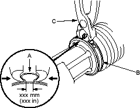
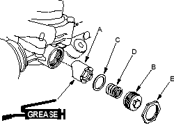
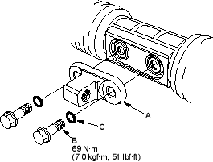
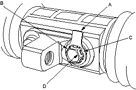

- Close the ear portion (A) of the bands (B) with a commercially available pincers, Oetiker 1098 or equivalent (C).

- Slide the rack right and left to be certain that the boots are not deformed or twisted.
- Grease the sliding surface of the rack guide (A), and install it onto the gearbox housing.

- Apply sealant to the all around threads on the rack guide screw (B), then install the disc washer (C), spring (D), rack guide screw and locknut (E).
- Adjust rack guide screw (see page 17-13). After adjusting, check that the rack moves smoothly by sliding it right and left.
- Before installing the bracket (A), clean the mating surface of the 12 mm flange bolts (B) and bracket. Then install the new O-rings (C) on the 12 mm flange bolts.

- Install the bracket on the steering rack with 12 mm flange bolts.
- After tightening the 12 mm flange bolts, install the stop plate (A) over the one side of bolt head (B). Be sure fit the tabs of the stop plate with flat surfaces (C) of the hexagonal bolt head.
